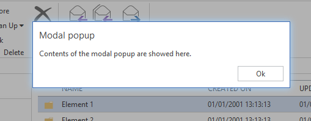

Introducing the OfficeUI Framework
The OfficeUI Framework is a rich command presentation system that provides a modern alternative to the classic HTML controls of thaditional web applications.
Views
The primary UI component of the OfficeUI Framework (the ribbon, the context menu, the grid and the modal) are differentiated structurally through Views. The framework itself supports 4 different Views the Ribbon View, the ContextPopup View, the Grid View and the Modal View.
The Ribbon View
The UI of the Ribbon View is the primary feature of the OfficeUI framework and provides a starting point for creating next-generation web applications using an very intuitive interface.
The ribbon is a command bar that exposes the major features of an application through a series of tabs at the top of a website. It is similar in functionaliry and appearance to the Microsoft Office 2013 Fluent UI. The ribbon provides an intuitive counterpoint to the traisl-and-error process of dsocvery that is quite common on standard web applications. Optimized for efficiency and discoverability, the ribbon facilitates finding, understanding, and using commands with minimum mouse clicks and keystrokes through a system of standard controls.
The following images illustrates a Ribbon implementation in a website.

The ContextPopup View
The ContextPopup View, provides a richer context menu system that in available in normal web application. A ContextPopup is not limited to a Ribbon but can in fact be deployed anywhere on the website.
The ContextPopup view provides additional features such as sub menu items, disabled menu items, icons and seperators.
The following images illustrates a ContextPopup implementation in a website.

Grid View
The Grid View, provides a way to display a collection of items in a grid representation.
The following image illustrates a Grid implementation in a website.

Modal View
The Modal View provides a way to draw the attention of a user on something important. When the Modal View is opened, it's also blocks any input to other elements on the page.
The following image illustrates a Modal implementation in a website.
